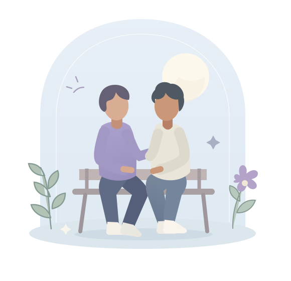

Загляни в сообщество
После запуска присоединяйся к группе ВК. Познакомься с правилами и почувствуй, подходит ли тебе такой формат.
СООБЩЕСТВО ВЗАИМНОЙ ПОДДЕРЖКИ
Иногда важно, чтобы кто-то просто выслушал.
Без оценок. Без «соберись». По-человечески.
Мы готовимся к запуску. Здесь появится ссылка на группу.

Люди поддерживают людей. Участники — добровольцы, а не служба помощи. Мы не заменяем специалиста и не обещаем немедленного ответа.
О наших границах01 / О НАС
«Рядом» начинается с простой идеи: в непростой день человеку нужен человек. Тот, кто готов услышать, разделить переживания и отнестись с уважением.
Мы вместе с Романом создаём сообщество взаимной эмоциональной поддержки во ВКонтакте. Здесь можно будет говорить о том, что волнует, делиться своим опытом или просто читать — в своём темпе.
Мы только начинаем. В команде пока нет профессиональных психологов. «Рядом» — не медицинская или психологическая служба, не терапия и не зарегистрированный благотворительный фонд.
02 / КАК ЭТО БУДЕТ
Не нужно подбирать идеальные слова.
И не обязательно говорить сразу.
После запуска присоединяйся к группе ВК. Познакомься с правилами и почувствуй, подходит ли тебе такой формат.
Расскажи о своих чувствах или просто почитай. Можно начать с «мне непросто» и поделиться только тем, чем хочется.
Откликнись, если есть ресурс. Иногда «я тебя слышу» важнее совета. Брать паузу и заботиться о себе — нормально.
03 / НА ЧЁМ МЫ СТОИМ
Поддержка начинается с уважения.
К чужому опыту и своим границам.
Хочешь, я просто послушаю
или поделюсь своим опытом?
Без обесценивания, сравнений и «другим ещё хуже». У каждого своя история, и чувства не нужно заслуживать.
Делимся личным опытом от своего имени. Не ставим диагнозы и не решаем за другого, как ему жить.
Можно не отвечать, не раскрывать подробности и завершить разговор. Поддержка добровольная — с обеих сторон.
Мы можем не знать ответа. Честное «мне жаль, что тебе тяжело» лучше обещания всё исправить.
04 / ПОНЯТНЫЕ ГРАНИЦЫ
Об этом важно договориться
ещё до первого разговора.
Не допускаются травля, угрозы, дискриминация, давление, навязчивые личные сообщения и предложения сомнительных услуг. Не публикуй подробные описания способов причинить вред себе или другим.
Если общение нарушает твои границы, его можно прекратить, заблокировать участника и воспользоваться жалобой ВК. После запуска о нарушении можно будет сообщить администраторам группы; они могут ответить не сразу.
Не выноси чужие истории, переписку и скриншоты за пределы разговора без согласия автора. Не публикуй чужие имена и контакты.
При этом мы не можем гарантировать конфиденциальность в соцсети: другие люди могут сохранить или переслать сообщения. Не указывай адрес, телефон, документы, медицинские выписки и другие чувствительные данные. Делись только тем, что готов раскрыть.
Участники не заменяют психолога, психотерапевта или врача. В сообществе нельзя назначать лечение, советовать начать, отменить или изменить приём лекарств, а также призывать скрывать изменения состояния от врача.
Вопросы лечения и лекарств нужно обсуждать с квалифицированным специалистом. Чужой опыт, как и ответ ИИ, не является медицинской рекомендацией.
Здесь общаются добровольцы. У каждого есть своя жизнь и пределы сил. Мы не обещаем немедленной помощи, круглосуточного присутствия, ответа на каждое сообщение или определённого результата.
Если ответа пока нет, это не обесценивает твои чувства. При непосредственной опасности не жди отклика в группе — обращайся в экстренные службы.
ЕСЛИ ПОМОЩЬ НУЖНА СЕЙЧАС
При непосредственной угрозе твоей или чужой жизни обратись в экстренные службы по месту нахождения. В России — 112. В другой стране используй местный экстренный номер.
«Рядом» не оказывает кризисную или экстренную помощь. Если можешь, свяжись с человеком, которому доверяешь, и попроси побыть рядом, пока обращаешься за помощью.
О вызове экстренных служб — МЧС РоссииМЕСТО ДЛЯ ТЕБЯ — В ТВОЁМ ТЕМПЕ
Мы готовим сообщество во ВКонтакте.
Когда оно откроется, ссылка появится здесь.